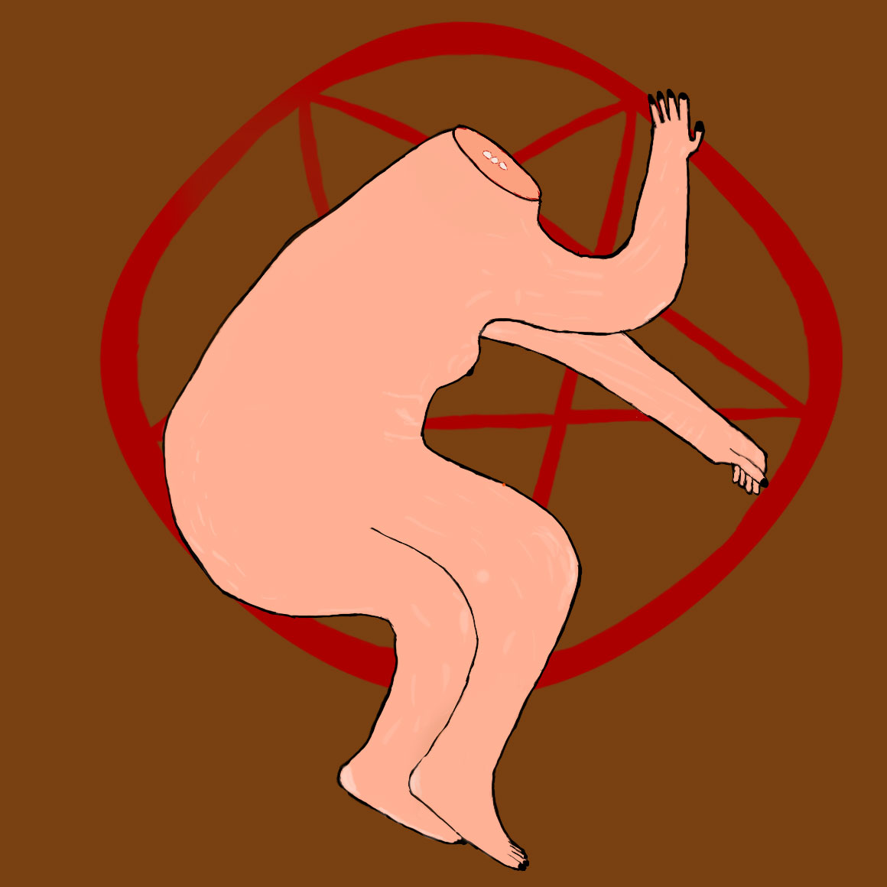

Image series
Here you can see some of the projects I have done. If it's a common theme or just
some image series that I am proud of.
I study photography so most Photographs were made for a "school subject" in mind. So here
you can see just my "best" or rather my
most favourites work that I have created till today. A lot of these works or projects are
deeply personal. So be warned.


★ Dream Sequenze -- Some disturbing images are here ★

★ Passing of time - Half Frame ★
★ My Coming Out ★


General Images
♥ Dream Series ♥
So my therapist suggested I should draw or write down my dreams and then create a happy
ending to them.
I did usually draw them but I sometimes struggled with a "Happy Ending". Out of this
reason this small "series" of images exists.
I drew them all on my Ipad on a ProCreate app.
WARNING: My drawings are pretty shit !!!
That's all.
A lot of these drawings have some really disturbing underlying themes of self harm, rape
or dysphoria.
Sadly I struggle a lot with body issues and some others pretty heavy topics.
In the first two images, the text acts almost like a mantra, that gets repeats over and
over in my brain.
What I think is also important to not that I don't have these dreams "daily".
Or rather I usually have them once and then I have different variations of these images
or themes.
♥ Cyano ♥
The photo series is entitled “Passing of Time – Half
Frame” and is conceived as a visual narrative of
inner and outer change.
The series consists of five motifs, each constructed as a “half
frame”: the left half of the image shows a state of “before” –
orderly, bright, open, friendly. The right half of the image
contrasts this state with an “after” – characterized by disorder,
darkness, withdrawal, and loss of control.
The choice of cyanotype as the printing process reinforces
this effect: the deep blue represents melancholy, distance,
and the feeling of being “submerged” – but also calm, depth,
isolation, and a hint of hope. The irregularities and
unpredictability of the process reflect the fragility and
individuality of each experience.
The series thus tells not only the story of an apartment, but
also that of a person in transition – from a functioning
everyday life to a state of depression and isolation. The
“half-frame” structure underscores the rupture that
experiencing a mental crisis can cause in one's life.
That's all.
Here are some behind the scenes of this project.
♥ My Coming out ♥
In this project on “My Coming Out”, I present an intimate and powerful series of
images documenting my personal journey of self-discovery and transformation.
Through a skillful combination of analog and digital photography, I capture the
complex emotions and experiences that come with coming out as a trans woman.
In this series, I present a series of carefully composed images ranging from
introspective self-portraits
to symbolic representations. Each photo tells its own story and invites you to reflect
on identity,
acceptance and the courage to be authentic. At the same time, all the images together
form a visual
narrative that reflects the entire process of my transition as a trans woman. This
overall composition
allows the viewer to comprehend both the individual moments and the overarching journey
of mine.
This work is not only a personal statement, but also a universal message of hope and
self-acceptance for all those on a similar journey.